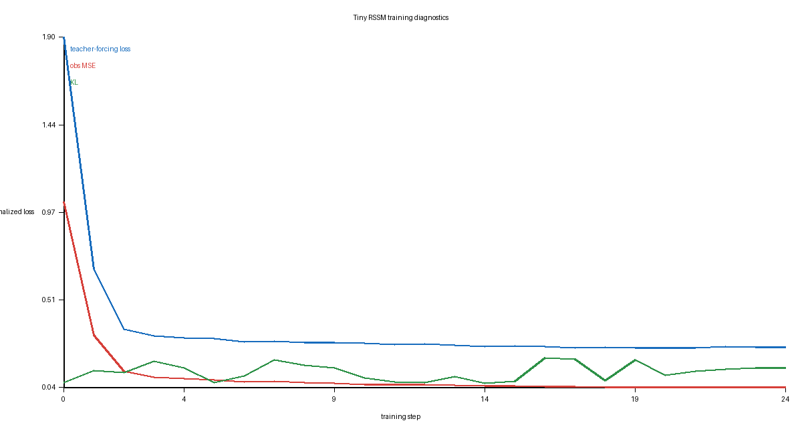

训练一个 RSSM 式 latent world model
Dreamer 的关键思想
不要在像素上直接学习全部动态，而是学习一个紧凑 latent state，再在这个 latent 空间里想象未来并训练策略。
posterior: q(z_t | o_t, h_t)
prior: p(z_t | h_t)
recurrent: h_t = GRU(z_t, a_t, h_t)
decode: z_t → o_t, r_t, done_t
loss: reconstruction + reward + done + KL本地教学模型
| 项 | 值 |
|---|---|
| hidden | 128 |
| latent | 16 |
| sequence length | 32 |
| steps | 1200 |
| val loss | 0.25721 |
| val obs MSE | 0.04346 |
实践：跑训练
ssh h200_1727
docker exec -it zmz_dev_v2 bash
cd /mnt/models_2296/zmz/workspace/worldmodel_embodied_ai/02_dreamer_latent_rl
source ../04_lerobot_dataset/.venv/bin/activate
python scripts/train_tiny_worldmodel.py --steps 1200观察 loss、obs MSE、KL 是否同时下降或进入平衡。
读图

检索练习
RSSM 中 prior 的作用是什么？
选择一个答案
prior 只依赖 recurrent state，在想象阶段没有真实观测时用来预测 latent。
本课一手来源
有疑问就问
把不理解的地方直接发给老师/agent，最好附上你观察到的现象和报错。
Course file: lessons/0006-rssm-training.html